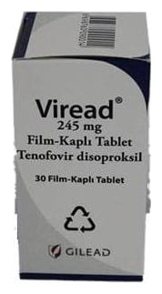

Viread 245 mg Film Kaplı Tablet, 30 Adet

Ne için kullanılır
KT · Bölüm 1VIREAD 245 mg film kaplı tablet, badem şeklinde ve açık mavi renklidir. Tabletlerin bir yüzünde “GILEAD” ve “4331”, diğer yüzünde ise “300” baskısı bulunur. VIREAD 245 mg film-kaplı tablet, 30 tablet içeren şişelerde bulunmaktadır. Her şişede tabletlerinizin korunması için bir silika jel desikan (nem çeker) bulunur ve şişeden çıkarılmamalıdır. Silika jel desikan ayrı bir poşet içinde veya bir kutuda bulunur ve yutulmamalıdır.
VIREAD 245 mg tablet, bir hepatit B virüsü (HBV) enfeksiyonu olan kronik hepatit B’yi tedavi etmek için kullanılır. Tabletler: • yetişkinler • 12 yaşından büyük 18 yaşından küçük ergenlerde kullanım için uygundur.
Bu ilacı kullanmaya başlamadan önce bu KULLANMA TALİMATINI dikkatlice okuyunuz, çünkü sizin için önemli bilgiler içermektedir.
• Bu kullanma talimatını saklayınız. Daha sonra tekrar okumaya ihtiyaç duyabilirsiniz. • Eğer ilave sorularınız olursa, lütfen doktorunuza veya eczacınıza danışınız. • Bu ilaç kişisel olarak size reçete edilmiştir, başkalarına vermeyiniz. • Bu ilacın kullanımı sırasında doktora veya hastaneye gittiğinizde, doktorunuza bu ilacı kullandığınızı söyleyiniz. • Bu talimatta yazılanlara aynen uyunuz. İlaç hakkında size önerilen dozun dışında yüksek veya düşük doz kullanmayınız.
VIREAD 245 mg tablet, ayrıca İnsan İmmün Yetmezlik Virüsü (HIV) enfeksiyonunu tedavi etmek için de kullanılır. Tabletler: • 18 yaşından büyük yetişkinler • direnç geliştirme nedeniyle artık tamamen etkili olmayan veya yan etkilere yol açan diğer HIV ilaçlarıyla daha önce tedavi edilmiş 12 yaşından büyük 18 yaşından küçük ergenlerde kullanım için uygundur.
Hepatit B virüsü (HBV ) açısından VIREAD’la tedavi edilmek için HIV enfeksiyonunuzun olması gerekmez.
VIREAD, etkin madde olarak tenofo vir disoproksil içerir. Bu etkin madde, hepatit B virüsünü veya HIV ya da her ikisini tedavi etmek için kullanılan antiviral veya antiretroviral bir ilaçtır. Tenofovir, genellikle NRTI olarak bilinen bir nükleotid revers transkriptaz inhibitörüdür ve virüslerin kendilerini yeniden üretmesi için esas olan enzimlerin (hepat it B ’de DNA polimeraz, HIV’de revers transkriptaz;) normal çalışmasını engelleyerek çalışır. HIV’de, VIREAD, HIV enfeksiyonunu tedavi etmek için her zaman diğer ilaçlarla birlikte kullanılmalıdır.
Bu ilaç, HIV enfeksiyonunun çaresi değildir. VIREAD kullanımı sırasında, yine HIV enfeksiyonu ile ilişkili enfeksiyonlar veya başka hastalıklar gelişebilir. Ayrıca başkalarına da HIV veya HBV bulaştırabilirsiniz; dolayısıyla, başkalarını enfekte etmekten kaçınmak için önlemler alınması önemlidir.